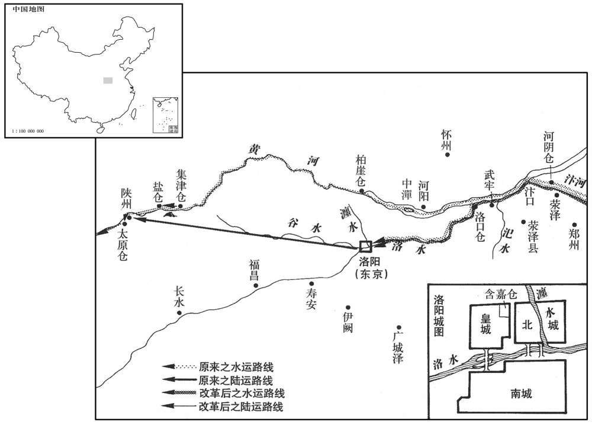
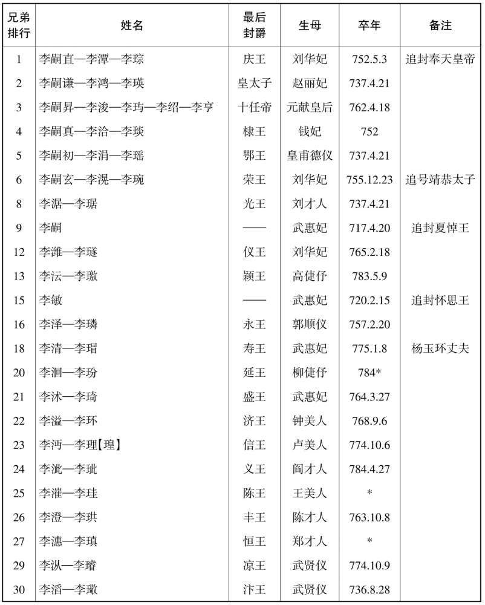
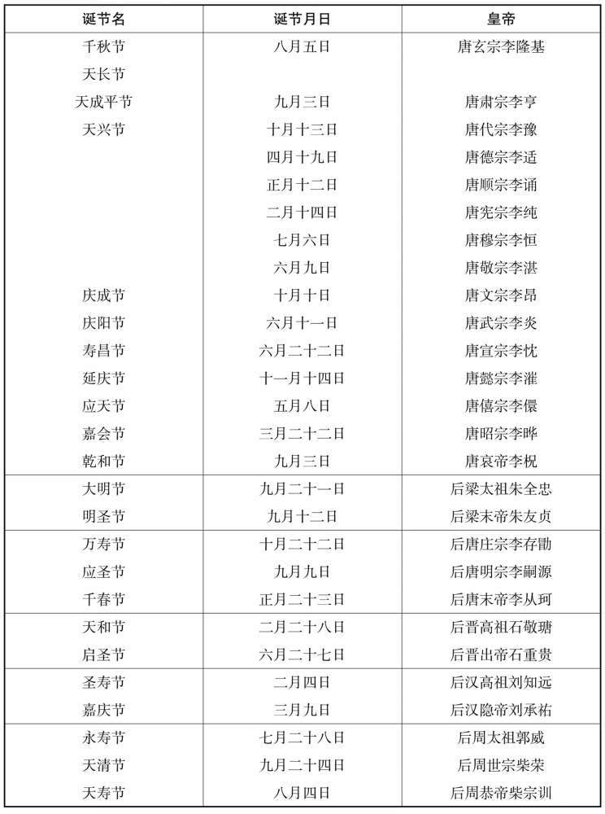
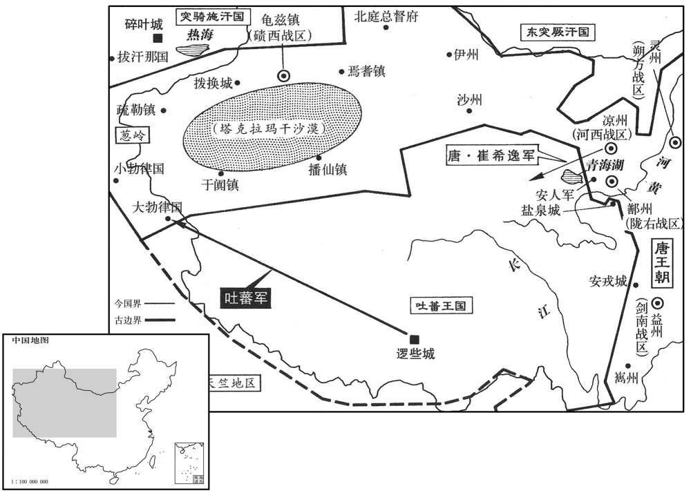
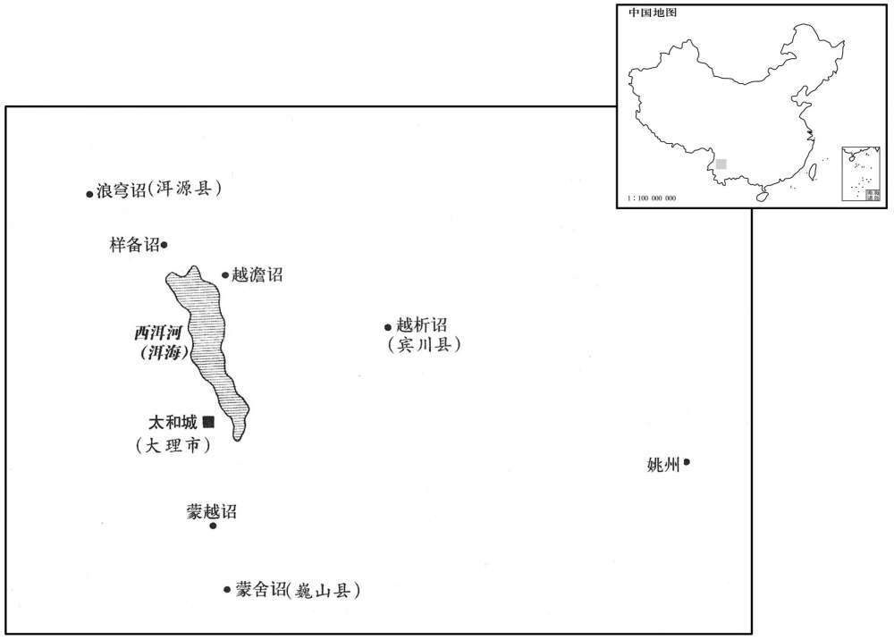
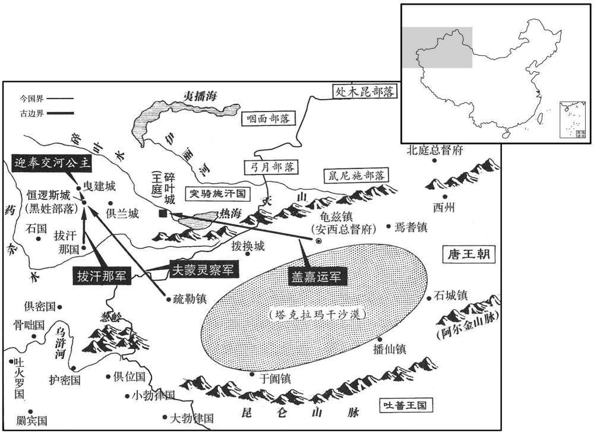

卷次与人物目录 / 卷214
资治通鉴 · 卷第二百一十四【唐纪三十】
公元734年至公元741年 · 原文与胡三省注（白话缺译）
本页按胡注本编排保存全卷原文与注释。本卷暂无可靠对应的白话，逐段保留缺译说明；不将古文当作白话。事件标题用于定位，并非原书文字。
本卷共151段原文，0段有译文对应，151段缺译或待核对。
卷第二百一十四【唐纪三十】起阏逄淹茂（甲戌），尽重光大荒落（辛已），凡八年。
卷首原文与注释
玄宗至道大圣大明孝皇帝中之中
公元734年 · 唐玄宗至道大圣大明孝皇帝开元二十二年
开元二十二年〔（甲戌、七三四）〕
上传原文的注释括号有异常，字符原样保留；无法可靠划分的段落默认全文显示。
本年事件索引（现代整理）

本年形势与背景参考图
春，正月，己已，上发西京；已丑，至东都。张九龄自韶州入见，〔见，贤遍翻。考异曰：唐纪，「二十六，日戊子，至东都；己丑，张九龄至自韶州。」今从实录。〕求终丧，不许。
本段缺少可靠对应白话，原文完整保留；未使用生成译文。
二月，壬寅，秦州地连震，坏公私屋殆尽，吏民压死者四千余人；命左丞相萧嵩赈恤。〔坏，音怪。赈，津忍翻。〕
本段缺少可靠对应白话，原文完整保留；未使用生成译文。
方士张果自言有神仙术，诳人云尧时为侍中，于今数千岁；多往来恒山中，〔恒山时属定州恒阳县界。诳，居况翻。恒，户登翻。〕则天以来，屡征不至。相州刺史韦济荐之，上遣中书舍人徐峤赍玺书迎之。〔相，息亮翻。玺，斯氏翻。〕庚寅，至东都，肩舆入宫，恩礼甚厚。
本段缺少可靠对应白话，原文完整保留；未使用生成译文。
张九龄请不禁铸钱，三月，庚辰，敕百官议之。裴耀卿等皆曰：「一启此门，恐小人弃农逐利，而滥恶更甚。」〔自武后以来，民间多恶钱，官不能禁。〕秘书监崔沔曰：「苦税铜折役，则官冶可成，计估度庸，则私铸无利，易而可久，简而难诬。〔沔，弥兖翻。折，之舌翻。，易以豉翻。且夫钱之为物，贵以通货，利不在多，何待私铸然后足用也！」右监门录事参军刘秩曰：〔唐十六卫府皆有录事参军，正八品下，掌受诸曹及五府之外府事，句稽抄目，印给纸笔。监，古衔翻。〕「夫人富则不可以赏劝，贫则不可以威禁。若许其私铸，贫者必不能为之；臣恐贫者益贫而役于富，富者益富而逞其欲。汉文帝时，吴王濞富埒天子，铸钱所致也。」〔事见十四卷汉文帝五年。濞，匹备翻。埒，力辍翻。〕上乃止。秩，子玄之子也。〔刘子玄，即知几，避帝嫌名，以字行。〕
本段缺少可靠对应白话，原文完整保留；未使用生成译文。
夏，四月，壬辰，以朔方节度使信安王祎兼关内道采访处置使，增领泾、原等十二州。〔处，昌吕翻。〕
本段缺少可靠对应白话，原文完整保留；未使用生成译文。
吏部侍郎李林甫，柔佞多狡数，深结宦官及妃嫔家，伺候上动静，无不知之，〔伺，相吏翻。由是每奏对，常称旨，上悦之。称，尺证翻。时武惠妃宠幸倾后宫，生寿王清，诸子莫得为比，太子浸疏薄。林甫乃因宦官言于惠妃，愿尽力保护寿王；惠妃德之，阴为内助，由是擢黄门侍郎。〔考异曰：旧传云：「初，侍中裴光庭妻武三思女，诡谲有材略，与林甫私。中官高力士本出三思家，及光庭卒，武氏衔哀祈于力士，请林甫代其夫位；力士未敢言。玄宗使中书令萧嵩择相；久之，以右丞韩休对。玄宗然之，乃令草诏。力士遽漏于武氏，乃饮林甫白休。休既入相，甚德林甫，与嵩不和，乃荐林甫堪为宰相，惠妃阴助之，因拜黄门侍郎，玄宗眷遇益深。」按光庭妻，一寡妇耳，岂敢遽引所私代其夫为相！韩休正直，虽得林甫先报，必不至荐之为相。今不取。〕五月，戊子，以裴耀卿为侍中，张九龄为中书令，林甫为礼部尚书、同中书门下三品。〔为李林甫得权、太子废张本。。颜真卿疏曰：「天宝已后，阉官袁思艺日宣诏至中书，玄宗动静必告林甫；林甫先意奏请，玄宗惊喜若神，以此权柄，恩宠日甚。」〕
本段缺少可靠对应白话，原文完整保留；未使用生成译文。
上种麦于苑中，帅太子以下亲往芟之，〔帅，读曰率。芟，所衔翻。〕谓曰：「此所以荐宗庙，故不敢不亲，且欲使汝曹知稼穑艰难耳。」又徧以赐侍臣曰：「比遣人视田中稼，多不得实，故自种以观之。」〔种艺之事，天有雨旸之不时，地有肥硗之不等，而人力又有至不至，故所收有厚薄之异也。若人君不夺农时，人得尽其力，则地遗利矣，岂必待自种而观其实哉！〕
本段缺少可靠对应白话，原文完整保留；未使用生成译文。
六月，壬辰，幽州节度使张守珪大破契丹，〔使，疏吏翻；下同。契，欺讫翻，又音吃。考异曰：实录：「守珪大破林胡。」按会要，契丹事，二十二年，守珪大破之。盖实录以契丹即战国时林胡地，故云然。〕遣使献捷。
本段缺少可靠对应白话，原文完整保留；未使用生成译文。
薛王业疾病，上忧之，容发为变。〔为，于伪翻。〕七月，己已，薨，赠谥惠宣太子。
本段缺少可靠对应白话，原文完整保留；未使用生成译文。
上以裴耀卿为江淮、河南转运使，〔考异曰：旧纪云：「充江、淮以南回造使。」令从旧食货志。〕于河口置输场。八月，壬寅，于输场东置河阴仓，西置柏崖仓，〔高宗咸亨二年，于洛州河阳县柏崖置仓，开元十年废，今复因旧基置之。〕三门东置集津仓，西置盐仓；凿漕渠十八里以避三门之险。参考新、旧志，乃是凿山开车路十八里，非漕渠也。〕先是，舟运江、淮之米至东都含嘉仓，僦车陆运，三百里至陕，率两斛用十〔严：「十」改「千」。〕钱。耀卿令江、淮舟运悉输河阴仓，更用河舟运至含嘉仓及太原仓，自太原仓入渭输关中，凡三岁，运米七百万斛，省僦车钱三十万缗。〔按旧志，东都含嘉仓积江淮之米，载以大舆，运而西至于陕三百里，率两斛计庸钱千，此耀卿所省之大数也。「十钱」误，当从「千钱」为是。先，悉荐翻。僦，即就翻。陕，失冉翻。更，工衡翻。考异曰：旧志云「四十万贯」。今从耀卿传。旧志又云：「明年，耀卿拜侍中，萧炅代焉。」按耀卿二十一年建此议，今年为侍中，始置河阴仓，后三年方见成效；则非作侍中时解此职也。〕或说耀卿献所省钱，说，式芮翻。耀卿曰：此公家赢缩之利耳，柰何以之市宠乎！」悉奏以为市籴钱。〔籴，徒历翻。〕
本段缺少可靠对应白话，原文完整保留；未使用生成译文。
张果固请归恒山，制以为银青光禄大夫，号通玄先生，厚赐而遣之。后卒，好异者奏以为尸解；〔解，佳买翻。仙家所谓尸解，譬犹蝉蜕，蝉飞而蜕在也。卒，子恤翻。好，呼到翻。〕上由是颇信神仙。〔明皇改集仙为集贤殿，是其初心不信神仙也，至是则颇信矣，又至晚年则深信矣。史言正心为难，渐入于邪而不自觉。〕
本段缺少可靠对应白话，原文完整保留；未使用生成译文。
冬、十二月，戊子朔，日有食之。
本段缺少可靠对应白话，原文完整保留；未使用生成译文。
乙巳，幽州节度使张守珪斩契丹王屈烈及突千，传首。〔考异曰：旧守珪传「屈烈」作「屈刺」。契丹传来年正月传首。今从实录。〕
本段缺少可靠对应白话，原文完整保留；未使用生成译文。
时可突干连年为边患，赵含章、薛楚玉皆不能讨，守珪到官，屡击破之。可突干困迫，遣使诈降，守珪使管记王悔就抚之。悔至其牙帐，察契丹上下殊无降意，〔降，户江翻；下同。〕但稍徙营帐近西北，密遗人引突厥，谋杀悔以叛；悔知之。〔近，其靳翻。〕牙官李过折〔考异曰：旧契丹传作「遇折」。今从实录及守珪传。与可突干分典兵马，争权不泣，悔说过折使图之。〔说，式芮翻。〕过折夜勒兵斩屈烈及可突干，尽诛其党，帅余众来降。〔帅，读曰率。〕守珪出师紫蒙州，〔【章：十二行本「州」作「川」；乙十一行本同；孔本同】〕〔据晋书载记：秦、汉之间，东胡邑于紫蒙之野。唐书地理志，平州有紫蒙、白狼、昌黎等戍。盖平州之北境，契丹之南界也。〕大阅以镇抚之。枭屈烈、可突干首于天津之南。〔枭，坚尧翻。〕
本段缺少可靠对应白话，原文完整保留；未使用生成译文。
突厥毗伽可汗为其大臣梅录啜所毒，〔厥，九勿翻。伽，求迦翻。可从刊入声。汗，音寒。啜，陟劣翻。〕未死，讨诛梅录啜及其族党。既卒，子伊然可汗立，寻卒，弟登利可汗立，〔卒，子恤翻。旧史曰：登利，华言果报也。考异曰：旧传，「伊然立，诏宗正卿李诠吊祭，册立伊然，为立碑庙。无几，伊然病卒，又立其弟为登利可汗。」按张九龄集敕登利可汗书云：「今又遣从叔金吾大将军佺吊祭。」又云，「建碑立庙，贻范纪功。」然则告丧时登利已立矣。实录「诠」亦作「佺」。〕庚戌，来告丧。
本段缺少可靠对应白话，原文完整保留；未使用生成译文。
禁京城伹者，置病坊以廪之。〔时病坊分置于诸寺，以悲田养病，本于释教也。伹，古太翻。〕
本段缺少可靠对应白话，原文完整保留；未使用生成译文。
公元735年 · 唐玄宗至道大圣大明孝皇帝开二十三年
二十三年〔（乙亥、七三五）〕
上传原文的注释括号有异常，字符原样保留；无法可靠划分的段落默认全文显示。
本年事件索引（现代整理）
春，正月，契丹知兵马中郎李过折来献捷；制以过折为北平王，检校松漠州都督。〔考异曰：实录云「同幽州节度副大使。」旧传云「授特进、检校松漠州都督」。按过折虽有功，唐未必肯使为幽州节度使。今从旧传。
本段缺少可靠对应白话，原文完整保留；未使用生成译文。
乙亥，上耕藉田，九推乃止；〔杜佑曰：是年亲耕，有司进仪注：天子三推，公卿九推，庶人终亩。帝欲重耕藉，遂进耕五十余步，尽陇乃止。推，吐雷翻〕公卿以下皆终亩。赦天下，都城酺三日。〔都城，谓东都城。酺，音蒲。〕
本段缺少可靠对应白话，原文完整保留；未使用生成译文。
上御五凤楼酺宴，观者諠隘，乐不得奏，金吾白梃如雨，不能遏；〔隘，乌懈翻。梃，待鼎翻。〕上患之。高力士奏河南丞严安之为理严，〔唐赤县丞从七品。理，治也；唐讳「治」，改曰「理」。〕为人所畏，请使止之；上从之。安之至，以手板绕场画地曰：「犯此者死！」于是尽三日，人指其画以相戒，无敢犯者。
本段缺少可靠对应白话，原文完整保留；未使用生成译文。
时命三百里内刺史、县今各帅所部音乐集于楼下，各较胜负。〔帅，读曰率。〕怀州刺史以军载乐工数百，皆衣文绣服箱之牛皆为虎豹犀象之状。〔诗大东曰：晥彼牵牛，不以服箱。注云：服，牝服也。箱，大车之箱也。疏云：两较之间谓之箱。甫田云：乃求万斯箱。书传云：长几充箱。是车内容物之处。丘氏曰：服箱，犹言驾车也。衣，于既翻。〕鲁山令元德秀惟遣乐工数人，连袂歌于蒍。〔鲁山，古鲁县，夏孔甲时，豢龙氏刘累所迁之地。汉为鲁阳县，属南阳郡，后魏置鲁阳郡，隋复为鲁县，属汝州。唐为鲁山县，以县有鲁山，故名。于蒍者，德秀所为歌也。蒍，韦委翻。考异曰：明皇杂录作「于蒍」，新传作「于蒍于」。未详其义。今从杂录。〕上曰：「怀州之人，其涂炭乎！」立以刺史为散官。散官，无职事。散，苏旱翻。〕德秀性介洁质朴，士大夫皆服其高。
本段缺少可靠对应白话，原文完整保留；未使用生成译文。
上美张守珪之功，欲以为相张七龄谏曰：「宰相者，代天理物，非赏功之官也。」上曰：「假以其名而不使任其职，可乎！」对曰：「不可。惟名与器不可以假人，君之所司也。〔左传记孔子之言。〕且守珪纔破契丹，陛下即以为宰相；若尽灭奚、厥，〔奚、厥，谓奚与突厥。厥，九勿翻。〕将以何官赏之﹖」上乃止。二月，守珪诣东都献捷，拜右羽林大将军，兼御史大夫，赐二子官，赏赉甚厚。〔赉，来代翻。〕
本段缺少可靠对应白话，原文完整保留；未使用生成译文。
初，殿中侍御史杨汪既杀张审素，〔事见上卷十九年。〕更名万顷。〔更，工衡翻。〕审素二子鮖、琇皆幼，〔鮖，户盲翻，又音皇。琇，音秀。〕坐流岭表；寻率归，谋伺便复雠。〔伺，相吏翻。〕三月，丁卯，手杀万顷于都城，系表于斧，言父冤状；欲之江外杀与万顷同谋陷其父者，至汜水，为有司所得。〔汜，音祀。议者多言二子父死非罪，牦，直利翻。〕张九龄亦欲活之。裴耀卿、李林甫以为如此，坏国法，〔坏，音怪。〕上亦以为然，谓九龄曰：「孝子之情，义不顾死，然杀人而赦之，此涂不可启也。」乃下敕曰：「国家设法，期于止杀。各伸为子之志，谁非徇孝之人！展转相雠，何有限极！咎繇作士，〔咎，与皋同，古劳翻。繇，与陶同，余招翻。法在必行。曾参杀人，亦不可恕。宜付河南府杖杀。」士民皆怜之，为作哀诔，牓于衢路。〔为，于伪翻。诔，鲁水翻。市人敛钱葬之于北邙，恐万顷家发之，仍为疑冢数处。〔多作冢以疑之，使莫知其所葬之的处。〕
本段缺少可靠对应白话，原文完整保留；未使用生成译文。
唐初，公主实封止三百户，中宗时，太平公主至五千户，率以七丁为限。开元以来，皇妹止千户，皇女又半之，皆以三丁为限；驸马皆除三品员外官，而不任以职事。公主邑入至少至不能具车服，〔少，诗沼翻。〕左右或言其太薄，上曰：「百姓租赋，非我所有。战士出死力，赏不过束帛；女子何功，而享多户邪﹖且欲使之知俭啬耳。」秋，七月，咸宜公主将下嫁，〔咸宜公主下嫁杨洄。〕始加实封至千户。公主，武惠妃之女也。于是诸公主皆加至千户。
本段缺少可靠对应白话，原文完整保留；未使用生成译文。
冬，十月，戊申，突骑施寇北庭及安西拨换城。〔骑，奇寄翻。〕
本段缺少可靠对应白话，原文完整保留；未使用生成译文。
闰月，壬午朔，日有食之。〔考异曰：旧纪作「十一月，壬申朔」。按长历，十一壬子朔。今从实录、唐历。〕
本段缺少可靠对应白话，原文完整保留；未使用生成译文。
十二月，乙亥，册故蜀州司户杨玄琰女为寿王妃。〔为帝纳妃于后宫以乱国张本。考异曰：实录载册文，云「玄伷长女」。按陈鸿长恨歌传云：「诏高力士潜搜外宫，得杨玄琰女于寿邸。」旧杨贵妃传云：「玄琰女早孤，养于叔父玄伷。」又云：「或奏玄琰女容色冠代，宜蒙召见。时妃衣道士服，号太真。」新传云：「始为寿王妃云云，遂召内禁中，即为自出妃意者，伹籍女官，号太真，更为寿王娶韦昭训女，而太真得幸。」旧史盖讳之耳。〕玄琰，汪之曾孙也。〔杨汪见一百八十三卷隋炀帝大业十二年。〕
本段缺少可靠对应白话，原文完整保留；未使用生成译文。
是岁，契丹王过折为其臣涅礼所杀，〔涅，奴结翻。考异曰：旧传，过折为可突千余党泥里所杀，不云朝廷如何处置泥里。今据张九龄集有此赐契丹都督涅礼敕，又有赐张守珪敕云：「涅礼自擅，难以义责，而未有名位，恐其不安，卿可宣示朝旨，使知无他也。」盖泥里即涅礼也。〕并其诸子，一子剌干奔安东得免。剌，卢达翻。干，音干。开元二年移安东都护府于平州。〕涅礼上言，过折用刑残虐，众情不安故杀之。上赦其罪，因以涅礼为松漠都督，且赐书责之曰：「卿之蕃法多无义于君长，长，知两翻。〕自昔如此，朕亦知之。然过折是卿之王，有恶辄杀之，为此王者，不亦难乎！但恐卿为王，后人亦尔。常不自保，谁愿作王！亦应防虑后事，岂得取快目前！」突厥寻引兵东侵奚、契丹，涅礼与奚王李归击破之。
本段缺少可靠对应白话，原文完整保留；未使用生成译文。
公元736年 · 唐玄宗至道大圣大明孝皇帝开二十四年
二十四年〔（丙子、七三六）〕
上传原文的注释括号有异常，字符原样保留；无法可靠划分的段落默认全文显示。
本年事件索引（现代整理）
- 唐廷限期准许逃户自首还籍
- 盖嘉运大破突骑施
- 玄宗赐新任县令《循良戒》
- 唐玄宗更改诸皇子名
- 贡举考试改由礼部侍郎主持
- 安禄山讨奚契丹失利，玄宗赦免
- 安禄山出身及早年经历
- 史思明诱使奚将入朝并获唐廷任用
- 温噔因交结权贵被杖死，李祎等坐贬
- 刘志诚在醴泉作乱被擒斩
- 百官俸钱改为按月发给
- 韦绦奏增宗庙祭祀笾豆
- 张均、韦述反对增饰宗庙祭品
- 崔沔主张遵守古礼不增祭品
- 韦绦奏请增加太庙祭品
- 韦绦请提高外亲丧服等差
- 崔沔主张外亲丧服依古礼
- 韦述反对提高外亲丧服等第
- 杨仲昌援引孔子旧礼反对改服制
- 唐廷规定舅母及堂姨舅丧服
- 张均为张说之子
- 张九龄进献《千秋金镜录》
- 突骑施遣使请降获准
- 追赠李承干为恒山愍王
- 汴哀王李璥卒
- 玄宗提前自东都返回长安
- 张九龄反对授牛仙客高位封爵
- 张九龄警告李林甫为相恐成后患
- 张九龄力阻玄宗废黜太子
- 李林甫借机中伤严挺之
- 裴耀卿、张九龄罢相，李林甫掌权
- 张九龄罢相后朝臣不敢直言
- 李林甫威胁谏官以杜绝进言
- 李林甫以顺旨谄媚排斥异己

本年形势与背景参考图

本年形势与背景参考图
春，正月，庚寅，敕：「天下逃户，听尽今年内自首，有旧产者今还本贯，无者别俟进止；踰限不首，〔首，式又翻。〕当命专使搜求，散配诸军。」〔使，疏吏翻。〕
本段缺少可靠对应白话，原文完整保留；未使用生成译文。
北庭都护盖嘉运突骑施，大破之。〔盖，古盍翻，姓也。〕
本段缺少可靠对应白话，原文完整保留；未使用生成译文。
二月，甲寅，宴新除县令于朝堂，上作饮长新戒一篇，赐天下县令。〔朝，直遥翻。长，佑两翻。〕
本段缺少可靠对应白话，原文完整保留；未使用生成译文。
庚午，更皇子名：〔更，工衡翻。考异曰：旧纪、唐历：「二十三年，七月，景子，皇太子、诸王皆改名。」今从实录。〕鸿曰瑛，潭曰琮，浚曰玙，洽曰琰，涓日琬，涺曰琚，潍曰璲，〔璲，音遂。〕澐曰伷，〔伷，公了翻〕。泽日璘，清日瑁，〔瑁，音冒。〕洄曰玢，〔玢，方贫翻。〕沭曰琦，溢曰环，沔曰理，〔【严：「理」改「鮖」。】〕泚曰玼，漼曰珪，澄曰珙，潓曰瑱，〔瑱，他甸翻。〕漎曰璇，〔璇，从宣翻。〕滔曰璥。〔璥，居影翻。〕
本段缺少可靠对应白话，原文完整保留；未使用生成译文。
旧制，考功员外郎掌试贡举人。有进士李权，陵侮员外李昂，议者以员外郎位卑，不能服众；三月，壬辰，敕自今委礼部侍郎试贡举人。
本段缺少可靠对应白话，原文完整保留；未使用生成译文。
张守珪使平卢讨击使、左骁卫将军安禄山讨奚、契丹叛者，〔击使，疏吏翻。骁，坚尧翻；下同。〕禄山恃勇轻进，为虏所败。夏，四月，辛亥，守珪奏请斩之。禄山临刑呼曰：〔败，蒲万翻。呼，火故翻。〕「大夫不欲灭奚、契丹邪，柰何杀禄山！」守珪亦惜其骁勇，〔【章：十二行本「勇」下有「欲活之」三字；乙十一行本同；孔本同；张校同。】〕乃更执送京师。张九龄批曰：「昔穰苴诛庄贾，〔史记：齐景公使司马穰苴为将，穰苴曰：「愿得君之宠臣以监军。」景公使庄贾往。贾素骄贵，穰苴与之约，日中会于军门；夕时乃至。穰苴以贾后期，斩之，以令三军。批，匹迷翻，判也，今人谓之批判。〕孙武斩宫嫔。〔孙武以兵法见吴王阖庐，吴王曰：「可以勒兵小试于妇人乎﹖」曰：「可。」于是出宫中美女百八十人，分为二队，以王宠姬二人各为队长，皆令持戟。约束既布，三令五申，于是鼓之，右妇人大笑。孙子曰：「约束不行，申令不熟，将之罪也。」复三令五申而鼓之，左妇人复大笑。孙子斩左、右队长以徇，用其次为队长而复鼓，妇人左右前后跪起皆中绳墨规矩。于是吴王知孙子能用兵，以为将。〔守珪军令若行，禄山不宜免死。」上惜其才，敕令免官，以白衣将领。〔将，即亮翻。〕九龄固争，曰：「禄山失律丧师，于法不可不诛。且臣观其貌有反相，不杀必为后患。」〔丧，息浪翻。相，息亮翻。〕上曰：「卿勿以王夷甫识石勒，枉害忠良。」〔晋石勒年十四，随邑人行贩洛阳，倚啸上东门。王衍见而异之，顾谓左右曰：「向者胡雏，吾观其声视有奇志，恐将为天下之患。驰遗收之，会勒已去。〕竟赦之。〔考异曰：玄宗实录：「四月，辛亥，张守珪奏禄山统戎失律，挫败军威，请依军法斩决；许之。禄山临刑抗声言曰：『两蕃未和，忍杀壮士！岂为大夫谋也！』守珪以禄山尝捷于擒生，闻其言，遂舍之，以闻。」肃宗实录云：「禄山为互市牙郎，盗羊事发，守珪怒，追捕至，欲击杀之。禄山大呼曰：『大夫不欲灭奚、契丹两蕃邪！而杀壮士！』守珪奇其貌，壮其言，遂释之。」姚汝能作禄山事迹，其盗羊事与肃宗实录同。又云：「二十一年，守珪令禄山奏事。中书令张九龄见之，谓侍中裴光庭曰：『乱幽州者此胡也。』又云：「二十四年，禄山为平卢将，讨奚、契丹失利，守珪奏请斩之，九龄批曰：『穰苴出军，必诛庄贾；孙武行令，亦斩宫嫔。守珪军令若行，禄山不宜免死。』玄宗惜其勇锐，但令免官，白衣展效。九龄执奏诛之，玄宗曰：『卿岂以王夷甫识石勒，便臆断禄山难制邪！』竟不诛之。孙樵作西斋录，其序曰：「张守珪以安禄山叛者何﹖贷刑咈教，稔祸阶也。禄山乃张守珪部将，尝犯令，张曲江令守珪斩之，不从，果使乱天下；故书曰：『张守珪以安禄山叛。』旧张九龄传云：「张守珪以裨将安禄山讨奚、契丹，败饂，执送京师，请行朝典。九龄奏劾曰：『穰苴出军，必诛庄贾；孙武教战，亦斩宫嫔。守珪军令必行，禄山不宜免死。』上特舍之。九龄奏曰：『禄山狼子野心，面有逆相，臣请因罪戮之，冀绝后患。』上曰：『卿勿以王夷甫知石勒故事，误害忠良。』遂放归蕃。」新传语裴光庭事如事迹，执送京师事如旧传，旧禄山传盗羊事事迹，而无失利请斩事；新传亦然。旧传仍云：「二十年，守珪为幽州节度使，禄山盗羊事觉。」按裴光庭二十一年卒，是年冬，九龄乃为相，云与光庭语，误也。孙樵云「曲江令守珪斩之」，尤为失实。实录，二十一年，守珪犹在陇右与吐蕃立分界碑，未至幽州。旧传云「二十年为节度」，亦误也。按禄山若始为互市牙郎，守珪安能知其终乱天下，释而不杀！孙樵岂得遽以叛罪加之邪！若如旧九龄传，守珪执送京师，玄宗自赦之，则守珪何罪而时人咎之也！若谓盗羊丧师，两次当死，则禄山岂祗用辞而得免两死邪！若如玄宗实禄，守珪奏请行法，得报听许，感其一言，辄舍之，则守珪必不敢轻易反复如此。且九龄何从得见其面，而云面有逆相邪！若云守珪未尝奏请行法，则张九龄集有赐守珪敕云：「禄山等轻我兵威，曾不审料，致令损失，宜其就诛；卿既行之，军法合尔。」又赐平卢将士敕云：「安禄山之诛，缘轻敌太过，勿因此畏懦，致失后图。」是当时曾许之行诛矣。若云守珪自舍之，非玄宗意，则又赐守珪敕云：「禄山勇而无谋，遂至失利，衣甲资盗，挫我军威，论其轻敌，合加重罪。然初闻勇鬬，亦有诛杀；又寇戎未灭，军令从权，故不以一败弃之，将欲收其后效也。不行薄责，又无所惩，宜且停官，令白衣将领。卿更审量本状，亦任随事处之。」今以诸书参考，盖禄山失律，守珪奏请行法，故前敕云：「卿既行之，军法合尔。」又云：「禄山之诛，缘轻敌太过。」似谓守珪已诛之矣。既而守珪感其所言，惜其骁勇，欲杀则不忍，欲舍则先已奏闻，且恐不能厌服将士之心，或者报未到，故执送京师，使上自裁之，冀上见其材力而赦之，亦犹陈平执樊哙，卫青囚苏建耳。上因是欲赦之，而九龄执奏云：「守珪军令若行，禄山不宜免死。」是并劾守珪不断于阃外，乃更执以诿上之辞也。九龄因此见之，而云「面有逆相」，上终欲赦之，故九龄不得已草敕云：「卿更审量本状，随事处之。守珪得此敕，即舍之，以闻。如此则与玄宗实录相应，而于人情差似相近。〕
本段缺少可靠对应白话，原文完整保留；未使用生成译文。
安禄山者，本营州杂胡，初名阿荦山。其母，巫也；〔新书曰：禄山本姓康。其母居突厥中，祷于轧荦山，虏所谓战鬬神者，而生禄山，故以为字；从母冒姓安氏。阿，乌葛翻。荦，吕角翻。〕父死，母携之再适突厥安延偃。会其部落破散，与延偃兄子思顺俱逃来，故冒姓安氏，名禄山。又有史窣干者，〔窣，苏骨翻。〕与禄山同里闬，先后一日生。〔考异曰：旧传云：「思明除日生，禄山元日生。」按禄山事迹：「天宝十载正月二十日，上及贵妃为禄山作生日」，今不取。〕及长，相亲爱，皆为互市牙郎，以骁勇闻。牙郎，驵会也：南北物价，定于其口，而后相与贸易。〕张守珪以禄山为捉生将，禄山每与数骑出，辄擒契丹数十人而返。狡猾，善揣人情，〔将，即亮翻。骑，奇寄翻。揣，初委翻。〕守珪爱之，养以为子。
本段缺少可靠对应白话，原文完整保留；未使用生成译文。
窣干尝负官债亡入奚中，为奚游弈所得，欲杀之；窣干绐曰：「我，唐之和亲使也，〔绐，汤亥翻。〕汝杀我，祸且及汝国。」游弈信之，送诣牙帐。窣干见奚王，长揖不拜，奚王虽怒，而畏唐，不敢杀，以客礼馆之，〔馆，古玩翻。〕使百人随窣干入朝。窣干谓奚王曰：「王遣人虽多，观其才皆不足以见天子。闻王有良将琐高者，何不使之入朝！」〔琐高者，盖奚中酋豪之号，非人名也。前已有李诗琐高。将，即亮翻。朝，直遥翻。〕奚王即命琐高与牙下三百人随窣干入朝。窣干将至平卢，先使人谓军使裴休子曰：「奚使琐高与精锐俱来，声云入朝，实欲袭军城，宜谨为之备，先事图之。」休子乃具军容出迎，至馆，悉坑杀其从兵，执琐高送幽州。〔使，疏吏翻。先悉荐翻。从，才用翻。〕张守珪以窣干为有功，奏为果毅，累迁将军。后入奏事，上与语，悦之，赐名思明。〔安、史事始此。
本段缺少可靠对应白话，原文完整保留；未使用生成译文。
故连州司马武攸望之子温噔，坐交通权贵，杖死。〔帝平韦氏，武攸望贬死。噔，时刃翻。〕乙丑，朔方、河东节度使信安王祎贬衢州刺史，广武王承宏贬房州别驾，泾州刺史薛自劝贬澧州别驾；皆坐与温噔交游故也。承宏，守礼之子也。〔豳王守礼，章怀太子贤之子。〕辛未，蒲州刺史王琚贬通州刺史；坐与祎交书也。
本段缺少可靠对应白话，原文完整保留；未使用生成译文。
五月，醴泉妖人刘志诚作乱，驱掠路人将趣咸阳。〔妖，于乔翻。趣，七喻翻。〕村民走告县官焚桥路以拒之，〔断，音短。〕其众遂溃，数日，悉擒斩之。
本段缺少可靠对应白话，原文完整保留；未使用生成译文。
六月，初分月给百官俸钱。
本段缺少可靠对应白话，原文完整保留；未使用生成译文。
初，上因藉田赦，命有司议增宗庙笾豆之荐及服纪未通者。太常卿韦绦奏请宗庙每坐笾豆十二。〔绦，土刀翻。，坐徂卧翻。〕
本段缺少可靠对应白话，原文完整保留；未使用生成译文。
兵部侍郎张均、职方郎中韦述议曰：「圣人知孝子之情深而物类之无限，故为之节制。人之嗜好本无凭准，宴私之馔与时迁移，故圣人一切同于古。屈到嗜芰，屈建不以荐，以为不以私欲干国之典。〔国语：楚屈到嗜芰，有疾，召其宗老而属之曰：祭我必以芰。」及祥，宗老将荐芰，屈建命去之，曰：「国君有牛享，大夫有羊馈，士有豚犬之奠，庶人有鱼炙之荐，笾豆脯醢，则上下共之，不羞珍异，不陈庶侈，不以其私欲干国之典。」遂不用。芰，奇寄翻。菱，一名芰。说文曰：楚谓之芰，秦谓之薢茩，今俗但言菱芰。武陵记：四角、三角曰芰，两角曰菱。好，呼到翻。去，羌吕翻。〕今欲取甘旨肥浓，皆充祭用，苟踰旧制，其何限焉！书曰：『黍稷非馨，明德惟馨。』〔书成王命君陈之言。〕若以今之珍馔，平生所习，求神无方，何必泥古，则簠簋可去而盘盂案当在御矣，韶濩可息而箜篌筝苖当在奏矣。〔舜乐曰韶，汤乐日濩。箜篌，汉武帝使乐人侯调所作；或云侯辉所作。今按其形似瑟而小，七弦，用拨弹之如琵琶。旧唐书曰：箜篌，胡乐也。汉灵帝好之，体曲而长，二十三弦，竖抱于怀，用两手齐奏，俗名「擘箜篌」。凤首箜篌有项加轸七弦，郑善子作，开元中进，形如院咸，其下鈌小而身大，旁有小鈌，取其身便也。一曰：箜篌乃郑、卫之音权舆，以其亡国之声，故号空国之侯，亦曰坎侯。风俗通云：汉武帝时，丘仲作笛。按周礼，笙师掌教箎篴。又云，起于羌人，后汉马融所赋横笛，空洞、无底，剡其二孔，五孔一出其背，正似今之尺八。李善为之注，七孔今一尺四寸，此乃今之横笛耳。太常鼓吹部中所谓横吹，非融所赋者。融赋：「易京君明识音律，故本四孔加以一；君明所加孔后出，是谓商声五音毕。」沉约宋书亦云，京房备其五音。周礼笙师注：杜子春云：篴乃今时所吹五孔篴。以融、约所记论之，则古篴不应有五孔，子春之说，亦未为然。今三礼图画篴亦横设而有五孔，不知出何典据。篴，与笛同。簠，音甫。簋，居洧翻。〕既非正物，后嗣何观！夫神，以精明临人者也，不求丰大；苟失于礼，虽多何为！岂可废弃礼经以从流俗！且君子爱人以礼，不求苟合；况在宗庙，敢忘旧章！」
本段缺少可靠对应白话，原文完整保留；未使用生成译文。
太子宾客崔沔议曰：「祭祀之兴，肇于太古，茹毛饮血，则有毛血之荐；未有曲蘗，则有玄酒之奠。〔司烜氏以鉴取明水于月为玄酒。蘗，鱼列翻。施及后王，礼物渐备；〔施，弋智翻。〕然以神道致敬，不敢废也。笾豆簠簋樽罍之实，皆周人之时馔也，其用通于宴飨宾客，而周公制礼，与毛血玄酒同荐鬼神。国家由礼立训，因时制范，清庙时飨，礼馔毕陈，用周制也。〔如簠簋、笾豆、铏羹之类。馔，雏恋翻，又雏睆翻。〕园陵上食，时膳具设，遵汉法也。〔如叔孙通请荐含桃之类。上，时掌翻。〕职贡来祭，致远物也。有新必荐，顺时令也。苑囿之内，躬稼所收，搜狩之时，亲发所中，莫不荐而后食，尽诚敬也。若此至矣，复何加焉！中，竹仲翻。复，扶又翻。但当申敕有司，无或简怠，则鲜美肥浓，尽在是矣，不必加笾豆之数也。」〔自此以上，诸人之议，皆因旧礼而申之。〕
本段缺少可靠对应白话，原文完整保留；未使用生成译文。
上固欲量加品味。〔量，音良。〕绦又奏每室加笾豆各六，四时各实以新果珍羞；从之。
本段缺少可靠对应白话，原文完整保留；未使用生成译文。
绦又奏：「丧服『舅，缌麻三月，从母、外祖父母皆小功五月。』外祖至尊，同于从母之服；姨、舅一等，服则轻重有殊。〔姨，即从母也。从，才用翻。〕堂姨、舅亲即未疏，恩绝不相为服；舅母来承外族，不如同爨之礼。窃以古意犹有所未畅者，请加外祖父母为大功九月，姨、舅皆小功五月，堂舅、堂姨、舅母并加至袒免。」〔五服止于缌麻，此外有袒免之服。袒者，偏脱衣袒而露其肩；免者，以布广一寸，从项中而前交于额上，又却向后绕于髻。袒，音但。免，音问。〕
本段缺少可靠对应白话，原文完整保留；未使用生成译文。
崔沔议曰：「正家之道，不可以贰；总一定义，理归本宗。是以内有齐、斩，〔齐，音咨。〕外皆缌麻，尊名所加，不过一等，此先王不易之道也。愿守八明旨，一依古礼，〔崔沔所谓诏旨，见二百十二卷七年；曰八年者，通帝即位先天之年数之也。〕以为万代成法。」
本段缺少可靠对应白话，原文完整保留；未使用生成译文。
韦述议曰：「丧服传曰：『禽兽知母而父不知父。野人曰，父母何等〔【章：十二行本「等」作「筭」；乙十一行本同；退斋校同。】〕焉！都邑之士则知尊祢矣；传，直恋翻。祢矣；〔传，直恋翻。祢，奴礼翻。大夫及学士则知尊祖矣。』圣人究天道而厚于祖祢，系族姓而亲其子孙，母党比于本族，不可同贯，明矣。今若外祖与舅加服一等，堂舅及姨列于服纪，则中外之制，相去几何！废礼徇情，所务者末。古之制作者，知人情之易摇，恐失礼之将渐，别其同异，轻重相悬，〔易，以豉翻。别，彼列翻。〕欲使后来之人永不相杂。微旨斯在，岂徒然哉！苟可加也，亦可减也；往圣可得而非，则礼经可得而隳矣。先王之制，谓之彝伦，〔彝，常也。伦，道理次叙。〕奉以周旋，犹恐失坠；一紊其叙，庸可止乎！请依仪礼丧服为定。」〔紊，音问。〕
本段缺少可靠对应白话，原文完整保留；未使用生成译文。
礼部员外郎杨仲昌议曰：〔唐礼部郎掌五礼，举其仪制而辩其名数。〕郑文贞公魏征始加舅服至小功五月。虽文贞贤也，而周、孔圣也，以贤改圣，后学何从！窃恐内外乖序，亲疏夺伦，情之所沿，何所不至！昔子路有姊之丧而不除，孔子曰：『先王制礼，行道之人，皆不忍也。』子路除之。〔见记檀弓。〕此则圣人援事抑情之明例也。记曰：『毋轻议礼。』礼器之言。〕明其蟠于天地，并彼日月，贤者由之，安敢损益也！」
本段缺少可靠对应白话，原文完整保留；未使用生成译文。
敕：“姨舅既服小功，舅母不得全降，宜服缌麻，堂姨舅宜服袒免。”
本段缺少可靠对应白话，原文完整保留；未使用生成译文。
均，说之子也。〔说，读曰悦。〕
本段缺少可靠对应白话，原文完整保留；未使用生成译文。
秋，八月，壬子，千秋节，群臣皆献宝镜。张九龄以为以镜自照见形容，以人自照见吉凶。乃述前世兴废之源，为书五卷，谓之千秋金镜录，上之；〔上，时掌翻。〕上赐书褒美。
本段缺少可靠对应白话，原文完整保留；未使用生成译文。
甲寅，突骑施遣其大臣胡禄达干来请降，许之。〔骑，奇寄翻。降，户江翻。〕
本段缺少可靠对应白话，原文完整保留；未使用生成译文。
御史大夫李适之，承干之孙也，以才干得幸于上，数为承干论辩；甲戌，追赠承干恒山愍王。〔承干废见一百九十七卷太宗贞观十七年。数，所角翻。为，于伪翻。恒，户登翻。〕
本段缺少可靠对应白话，原文完整保留；未使用生成译文。
乙亥，汴哀王璥薨。
本段缺少可靠对应白话，原文完整保留；未使用生成译文。
冬，十月，戊申，车驾发东都。先是，敕以来年二月二日行幸西京，〔先，悉荐翻。〕会宫中有怪，明日，上召宰相，即议西还。裴耀卿、张九龄曰：「今农收未毕，请俟仲冬。」李林甫潜知上指，二相退，林甫独留，言于上曰：「长安、洛阳，陛下东西宫耳，往来行幸，何更择时！借使妨妨于农收，但应蠲所过租税而已。〔蠲，圭玄翻。〕臣请宣示百司，即日西行。」上悦，从之。过陕州，以刺史卢奂有善政，题赞于其听事而去。〔称人之美曰赞。陕，失冉翻。听，读曰厅。〕奂，怀慎之子也。丁卯，至西京。
本段缺少可靠对应白话，原文完整保留；未使用生成译文。
朔方节度使牛仙客，前在河西，能节用度，劝职业，仓库充实，器械精利；上闻而嘉之，欲加尚书。张九龄曰：「不可。尚书，古之纳言，唐兴以来，惟旧相及扬历中外有德望者乃为之。仙客本河湟使典，〔事见上卷十五年。相，息亮翻。使，疏吏翻。〕今骤居清要，死羞朝廷。」上曰：「然则但加实封可乎﹖」对曰：「不可。封爵所以劝有功也。边将实仓库，修器械，乃常务耳，〔将，即亮翻。〕不足为功。陛下赏其劝，赐之金帛可也；裂土封之，恐非其宜。」上默然。李林甫言于上曰：「仙客，宰相才也，何有于尚书！九龄书生，不达大体。」〔考异曰：旧林甫传曰：「林甫以九龄言告仙客，仙客翌日见上泣让官爵。」按时不闻仙客在京。今从唐历。〕上悦，明日，复以仙客实封为言，复，扶又翻。九龄固执如初。上怒，变色曰：「事皆由卿邪﹖」九龄顿首谢曰：「陛下不知臣愚，使待罪宰相，事有未允，臣不敢不尽言。」上曰：「卿嫌仙客寒微，如卿有何阀阅﹖九龄曰：「臣岭海孤贱，〔九龄，韶州人。〕不如仙客生于中华；〔牛仙客，泾州人。然臣出入台阁，典司诰命有年矣。〔九龄历司勋员外郎、中书舍人。〕仙客边隅小吏，目不知书，若大任之，恐不惬众望。」〔惬，苦謟翻。〕林甫退而言曰：「苟有才识，何必辞学！天子用人，有何不可！」十一月，戊戌，赐仙客爵陇西县公，食实封三百户。
本段缺少可靠对应白话，原文完整保留；未使用生成译文。
初，上欲以李林甫为相，问于中书令张九龄，九龄对曰：「宰相系国安危，陛下相林甫，臣恐异日为庙社之忧。」上不从。时九龄方以文学为上所重，林甫虽恨，犹曲意事之。侍中裴耀卿与九龄善，林甫并疾之。是时，上在位岁久，渐肆奢欲，怠于政事。而九龄遇事无细大皆力争；林甫巧伺上意，日思所以中伤之。〔伺，相吏翻。中，竹仲翻。〕
本段缺少可靠对应白话，原文完整保留；未使用生成译文。
上之为临淄王也，赵丽妃、皇甫德仪、刘才人皆有宠，〔帝置六仪，德仪其一也。〕丽妃生太子瑛，德仪生鄂王瑶，才人生王琚。及即位，幸武惠妃，丽妃等爱皆弛；惠妃生寿王瑁，宠冠诸子。太子与瑶、琚会于内第，〔时太子、诸王皆居禁中。冠，古玩翻。〕各以母失职有怨望语。驸马都尉杨洄尚咸宜公主，常伺三子过失以告惠妃。〔咸宜公主，武惠妃之女，故杨洄党于惠妃。〕惠妃泣诉于上曰：「太子阴结党与，将害妾母子，亦指斥至尊。」上大怒，以语宰相，欲皆废之。语，年倨翻。九龄曰：「陛下践阼垂三十年，太子诸王不离深宫，〔离，力智翻。〕日受圣训，天下之人皆庆陛下享国久长，子孙蕃昌。〔蕃，音烦。〕今三子皆已成人，不闻大过，陛下柰何一旦以无根之语，喜怒之际，尽废之乎！且太子天下本，不可轻摇。昔晋献公听骊姬之谗杀申生，三世大乱。〔左传，晋献公杀其世子申生，立骊姬之子；里克杀之。公子夷吾、重耳及子圉争国，三世大乱。〕汉武帝信江充之诬罪戾太子，京城流血。〔事见汉纪。〕晋惠帝用贾后之谮废愍怀太子，中原涂炭。〔事见晋纪。〕隋文帝纳独孤后之言黜太子勇，立炀帝，遂失天下。〔事见隋纪。由此观之，不可不慎。陛下必欲为此，臣不敢奉诏。」上不悦。爻甫初无所言，退而私谓宦官之贵幸者日：「此主上家事，何必问外人！」上犹豫未决。惠妃密使官奴牛贵儿谓九龄曰：「有废必有兴，公为之援，宰相可长处。」九龄叱之，以其语白上；上为之动色，〔处，昌吕翻。上为，于伪翻。〕故讫九龄罢相，太子得无动。林甫日夜短九龄于上，上浸疏之。〔考异曰：明皇杂录云：「林甫请见，屡陈仙客实封，九龄颇怀诽谤。于时方秋，上命高力士以白羽扇赐之。九龄惶恐，作赋以献。」新传亦云然。按实录，仙客加实封在十月。而九龄集白羽扇赋序云：「开元二十四年夏盛暑，奉敕使大将军高力士赐宰相白羽扇，九龄与焉。窃有所感，立献赋」云云。敕报曰：「朕顷赐羽扇，聊以涤暑，佳彼劲翮，方资利用，与夫弃捐箧笥，义不同也。」然则上以盛夏遍赐宰臣扇，非以秋日独赐九龄，但九龄因此献赋，自寄意耳。〕
本段缺少可靠对应白话，原文完整保留；未使用生成译文。
林甫引萧炅为户部侍郎。炅素不学，〔炅，古迥翻。尝对中书侍郎严挺之读「伏腊」为伏猎」。挺之言于九曰：「省中岂容有『伏猎侍郎』！」由是出炅为岐州史，故林甫怨挺之。九龄与挺之善，欲引以为相尝谓之曰：「李尚书方承恩，〔李林甫时以礼部尚书相〕。足下宜一造门，与之款昵。」挺之素负气，薄林甫为人，竟不之诣。林甫恨之益深。挺之先娶妻，出之，更嫁蔚州刺史王元琰，元琰坐赃罪下三司按鞫，挺之为之营解。林甫因左右使于禁中白上。上谓宰相曰：「挺之为罪人请属所由。」〔造，七到翻。更，工衡翻。蔚，纡勿翻。下，遐嫁翻。为，于伪翻。属，之欲翻。〕九龄曰：「此乃挺之出妻，不宜有情。」上曰：「虽离乃复有私。」〔复，扶又翻；下无复同。〕
本段缺少可靠对应白话，原文完整保留；未使用生成译文。
于是上积前事，以耀卿、九龄为阿党；壬寅，以耀卿为左丞相，九龄为右丞相，并罢政事。以林甫兼中书令；仙客为工部尚书、同中书门下三品，领朔方节度如故。〔考异曰：唐历曰：「宰相遥领节度，自仙客始。」按萧己嵩已遥领河西，非始此。〕严挺之贬洺州刺史，〔旧志，洺州，京师东北一千五百八十五里。〕王元琰流岭南。
本段缺少可靠对应白话，原文完整保留；未使用生成译文。
上即位以来，所用之相，姚崇尚通，宋璟尚法，张喜贞尚吏，张说尚文，李元纮、杜暹尚俭，韩休、张九龄尚直，各其所长也。九龄既得罪，自是朝廷之士，皆容身保位，无复直言。
本段缺少可靠对应白话，原文完整保留；未使用生成译文。
李林甫欲蔽塞人主视听，自专大权，明召诸谏官谓曰：「今明主在上，群臣将顺之不暇，乌用多言！诸君不见立仗马乎﹖食三品料，一鸣辄斥去。悔之何及！」〔塞，悉则翻。去，羌吕翻。唐旧仪，每日，尚乘以厩马八匹分为左右厢，立于正殿侧宫门外，候仗下即散。若大陈设则马在乐悬之北，与大象相次，进马二人，戎服执鞭，侍立于马之左，随马进退。〕补阙杜琎尝上书言事，〔琎，资辛翻。上，时掌翻。考异曰：唐历作「杜珽」。今从新书。〕明日，黜为下邽令。〔唐制：上县令从六品上，补阙从七品上。以此言之，则非黜也。盖唐人重内官，而品之高下不论也，况遗、补供奉官，地居清要乎！〕自是谏争路绝矣。
本段缺少可靠对应白话，原文完整保留；未使用生成译文。
牛仙客既为林甫所引，专给唯诺而已。〔争，读曰诤。唯，于癸翻。〕然二人皆谨守格式，百官迁除，各有常度，虽奇才异行，不免终老常调，其以巧谄邪险自进者，则超腾不次，自有他蹊矣。林甫城府深密，人莫窥其际。好以甘言啖人，而阴中伤之，不露辞色。凡为上所厚者，始则亲结之，及位势稍逼，辄以计去之。〔行，下孟翻。调，徒吊翻。中，竹仲翻。去羌吕翻。虽老奸巨猾，无能逃于其术者。〔如韦坚、杨慎矜、王錤之类是也。
本段缺少可靠对应白话，原文完整保留；未使用生成译文。
公元737年 · 唐玄宗至道大圣大明孝皇帝开二十五年
二十五年〔（丁丑、七三七）〕
上传原文的注释括号有异常，字符原样保留；无法可靠划分的段落默认全文显示。
本年事件索引（现代整理）

本年形势与背景参考图
春，正月，初置玄学博士，〔崇玄学，习老子、庄子、文子、列子、亦曰道举。〕每岁依明经举。
本段缺少可靠对应白话，原文完整保留；未使用生成译文。
二月，敕曰：「进士以声韵为学，多昧古今；明经以帖诵为功，罕穷旨趣。自今明经问大义十条，对时务策三首；进士试大经十帖。」
本段缺少可靠对应白话，原文完整保留；未使用生成译文。
戊辰，新罗王兴光卒，〔卒，子恤翻。〕子承庆袭位。
本段缺少可靠对应白话，原文完整保留；未使用生成译文。
乙酉，幽州节度使张守珪破契丹于捺禄山。〔使，疏吏翻。契，欺讫翻，又音吃。捺，奴刺翻。〕
本段缺少可靠对应白话，原文完整保留；未使用生成译文。
己亥，河西节度使崔希逸袭吐蕃，破之于青海西。
本段缺少可靠对应白话，原文完整保留；未使用生成译文。
初，希逸遣使谓吐蕃〔【章：十二行本「蕃」下有「边将」二字；乙十一行本同；退斋校同；张校同，云无注本亦无。】〕乞力徐曰：「两国通好，今为一家，何必更置兵守捉，妨人耕牧！请皆罢之。」乞力徐曰：「常侍忠厚，〔吐从暾入声。崔希逸盖带散骑常侍镇河西，故称之。使，疏吏翻。好，呼到翻。捉，仄角翻。〕言必不欺。然朝廷未必专以边事相委，万一有奸人交鬬其间，掩吾不备，悔之何及！」希逸固请，乃刑白狗为盟，各去守备；于是吐蕃畜牧被野。〔朝，直遥翻。去，羌吕翻。被，皮义翻。畜，许救翻。〕时吐蕃西击勃律，勃律来告急，上命吐蕃罢兵，吐蕃不奉诏，遂破勃律；上甚怒。会希逸傔人孙诲入奏事，〔傔，苦念翻。傔从也。唐制：凡诸军镇大使、副使以下，皆有慊人。别奏以为之使。大使慊二十五人，别奏十人；副使慊二十人，别奏八人。〕自欲求功，奏称吐蕃无备，请掩击，必大获。上命内给事赵惠琮与诲偕往，审察事宜。〔唐内侍省有内给事十人，从五品下，掌承旨劳问，分判省事；凡元日冬至，百官贺皇后，则出入宣传；宫人衣服费用，则具品秩，计其多少，春秋宣送中书。〕惠琮等至，则矫诏令袭之。希逸不得已，发兵自凉州南入吐蕃二千余里，至青海西，与吐蕃战，大破之，斩首二千余级，乞力徐脱身走。惠琮、诲皆受厚赏，自是吐蕃复绝朝贡。〔复，扶又翻；下而复同。朝，直遥翻。
本段缺少可靠对应白话，原文完整保留；未使用生成译文。
夏，四月，辛酉，监察御史周子谅弹牛仙客非才，引谶书为证。〔薛居正五代史曰：天后朝，有谶辞云：「首尾二鳞六十年，两角犊子自狂颠，龙蛇相鬬血成川。」当时好事者解云：「两角犊子」，牛也；必有牛姓干唐祚。监，古衔翻。弹，徒丹翻。〕上怒，命左右佂于庭，〔佂，蒲角翻，击也，又匹角翻。〕绝而复苏；仍杖之朝堂，流瀼州，至蓝田而死。〔瀼，如羊翻，又而章翻。蓝田县，汉、晋属京兆，后魏真君七年，并入霸城，太和十一年复，后周置蓝田郡，隋废郡为县，属京兆府。九域志，在府东南七十里。考异曰：旧纪云：「子谅以妄陈休咎，于朝堂决杀。」实录此月则曰：「子谅弹奏仙客非才，引妖谶为证。上怒，召入禁中责之。左右拉者数四，气绝而苏。」及仙客传则云：「子谅窃言于御史大夫李适之：『牛仙客不才，滥登相位。大夫国之懿亲，岂得坐观其事！』适之遽奏子谅之言。上大怒，廷诘子谅；子谅辞穷，于朝堂决杖，配流瀼州，行至蓝田死。」旧仙客传亦然。今从此月实录及旧纪。柳宗元周君墓碣云：「有唐贞臣汝南周氏讳某字某。」又曰：「在天宝年，有以谄谀至相位，贤臣放退。公为御史，抗言以白其事得死于墀下。」宗元集此碣虽无名字，然其事则子谅也；云在天宝年，误矣。〕李林甫言，「子谅，张九龄所荐也。」甲子，贬九龄荆州长史。
本段缺少可靠对应白话，原文完整保留；未使用生成译文。
杨洄又奏〔【章：十二行本「奏」作「谮」；乙十一行本同。】〕太子瑛、鄂王瑶、光王琚，云与太子妃兄驸马薛锈潜构异谋，〔锈，息六翻，又息救翻。考异曰：新传曰：「二十五年，洄复构瑛、瑶、琚与妃庂兄薛锈异谋。惠妃使人诡召太子、二王曰：『宫中有贼，请介以入。』太子从之。妃白帝曰：『太子、二王谋反，甲而来。』帝使中人视之，如言。遽召宰相林甫议，答曰：『陛下家事，非臣所宜豫。』帝意决，乃废瑛等。」按瑛等惠妃相猜忌已久，虽承妃言，岂肯遽被甲入宫！又按废太子制书云：「陷元良于不友，误元良不友，误二子于不义。」不言被甲入宫也。盖洄谮瑛等云欲害寿王瑁耳。今从旧传，但云「潜构异谋」。〕上召宰相谋之。李林甫对曰：「此陛下家事，非臣等所宜豫。」上意乃决。乙丑，使宦者宣制于宫中，废瑛、瑶、琚为庶人；〔于宫中废之，用李林甫家事之言也。考异曰：独孤及作裴稹行状云：「公为起居郎，三庶人以罪废；寿王以母宠子爱，议者颇有夺宗之嫌。道路悯默，朝野疑惧。公乃从容请间，慷慨献谏，上述新城之殷鉴，下陈戾园之元龟，谓兴亡之由，在废立之地。天子感悟，改容以谢，因诏以给事中授公。公曰：『陛下绝招谏之路，为日固久；今臣一言而荷殊宠，则言者众矣，何以钖之﹖』上善其敏而多其让，乃止不拜，寻除尚书祠部员外郎。」按稹，光庭之子。当是时，周子谅杖死，张九龄远贬，稹若敢为太子直冤，则声振宇宙，岂得湮没无闻，而诸书皆不言此事，盖出于及之虚美耳。〕流锈于瀼州；瑛、瑶、琚寻赐死城东驿，锈赐死于蓝田。瑶、琚皆好学有才识，死不以罪，人皆惜之。〔好，呼到翻。〕丙寅，瑛舅家赵氏，妃家薛氏、瑶舅家皇甫氏，坐流贬者数十人，惟瑶妃家韦氏以妃贤得免。
本段缺少可靠对应白话，原文完整保留；未使用生成译文。
五月，夷州刺史杨浚坐赃当死，上命杖之六十，流古州。〔夷州，汉牂柯地，其后为徼外。隋开置绥阳县，属明阳郡，武德四年置夷州于思州宁夷县，明阳属焉。而绥阳属义州，贞观元年废夷州，而明阳、宁夷属务州；四年复置夷州于黔州都上县，寻又自都上移于绥阳。贞观十二年，李弘节开夷、獠，置古州，属容州都督府。〕左丞相裴耀卿上疏，以为「决杖赎死，恩则甚优，解体受笞，事颇为辱，止可施之徒隶，不当及于士人。」上从之。
本段缺少可靠对应白话，原文完整保留；未使用生成译文。
癸未，敕以方隅底定，令中书门下与诸道节度使量军镇闲剧利害，审计兵防定额，于诸色征人及客户中召募丁壮，长充边军，增给田宅，务加优恤。
本段缺少可靠对应白话，原文完整保留；未使用生成译文。
辛丑，上命有司选宗子有才者，授以台省及法官、京县官，敕曰：「违道慢常，义无私于王法；修身效节，恩岂薄于他人！期于帅先，励我风俗。」〔帅，读曰率。〕
本段缺少可靠对应白话，原文完整保留；未使用生成译文。
秋，七月，己卯，大理少卿徐峤〔考异曰：旧纪作「徐岵」。今从刑法志、通典。奏：「今岁天下断死刑五十八，大理狱院，由来相传杀气太盛，鸟雀不栖，今有鹊巢其树。于是百官以几致刑措，上表称贺。〔断，丁乱翻。几，居依翻。上，时掌翻。〕上归功宰辅，庚辰，赐李林甫爵晋国公，牛仙客豳国公。〔考异曰：实录：「七月，戊寅，有司奏囚减少，上归美宰臣，制曰：『断狱五十，殆至无刑，』遂封二人。」又：「十月丙午，上因听政，问京城囚徒，有司奏有五十人；怡然有喜色，下制曰：『日者丛棘之地，乌鹊来巢。今结诸刑名，纔逾五十，其刑部侍郎郊少微等各赐中上考。』」二者未详其为一事、二事。今从旧纪。〕
本段缺少可靠对应白话，原文完整保留；未使用生成译文。
上命李林甫、牛仙客与法官删修律令格式成，九月，壬申，颁行之。
本段缺少可靠对应白话，原文完整保留；未使用生成译文。
先是，西北边数十州多宿重兵，〔先，悉荐翻。〕地租营田皆不能赡，〔赡，而艳翻。始用和籴之法。有彭果者，因牛仙客献策，请行籴法于关中。戊子，敕以岁稔谷贱伤农，命增时价什二三，和籴东、西畿粟各数百万斛，〔东畿，都畿也。西畿，京畿也。籴，他历翻。〕停今年江、淮所运租。自是关中蓄积羡溢，〔羡，延面翻。车驾不复幸东都矣。〔复，扶又翻。〕癸已，敕河南、北租应输含嘉、太原仓者，据李泌传，太原仓在陕州西。皆留输本州岛。
本段缺少可靠对应白话，原文完整保留；未使用生成译文。
太常博士王玙〔玙，音余。考异曰：旧传不言玙乡里世系。新传云「方庆六世孙」。又新旧传皆云：「抗疏请置春坛，因迁太常博士。」不知其本何官也。新表，「王方庆五世孙玙事肃宗」。按方庆长安二年卒，距此才三十六年，不应已有五世、六世孙能上疏，恐玙偶与之同名，实非也。今不取。上疏请立青帝坛以迎春；从之。冬，十月，辛丑，制自今立春亲迎春于东郊。
本段缺少可靠对应白话，原文完整保留；未使用生成译文。
时上颇好祀神鬼，〔好，呼到翻。〕故玙专习祠祭之礼以干时。上悦之，以为侍御史，领祠祭使。玙祈祷或焚纸钱，类巫觋。〔汉以来丧葬有瘗钱，后世俚俗稍以纸寓钱为鬼事。使，疏吏翻。觋，刑狄翻。习礼者羞之。
本段缺少可靠对应白话，原文完整保留；未使用生成译文。
壬申，上幸骊山温泉。乙酉，还宫。
本段缺少可靠对应白话，原文完整保留；未使用生成译文。
己丑，开府仪同三司广平文贞公宋璟薨。
本段缺少可靠对应白话，原文完整保留；未使用生成译文。
十二月，丙午，惠妃武氏薨，赠谥贞顺皇后。
本段缺少可靠对应白话，原文完整保留；未使用生成译文。
是岁，命将作大匠康缰素上言：「毁之劳人，请去上层，〔去，羌吕翻。〕卑于旧九十五尺，仍旧为干元殿。」从之。
本段缺少可靠对应白话，原文完整保留；未使用生成译文。
初令租庸调、租资课，〔调，徒吊翻。〕皆以土物输京都。〔西京、东都租庸调，高祖、太宗之法；租资课必开元以来之法。
本段缺少可靠对应白话，原文完整保留；未使用生成译文。
公元738年 · 唐玄宗至道大圣大明孝皇帝开二十六年
二十六年〔（戊寅、七三八）〕
上传原文的注释括号有异常，字符原样保留；无法可靠划分的段落默认全文显示。
本年事件索引（现代整理）

本年形势与背景参考图
春，正月，乙亥，以牛仙客为侍中。
本段缺少可靠对应白话，原文完整保留；未使用生成译文。
丁丑，上迎气于浐水之东。浐，音产。
本段缺少可靠对应白话，原文完整保留；未使用生成译文。
制边地长征兵，召募向足，自今镇兵勿复遣，〔复，扶又翻。〕在彼者纵还。
本段缺少可靠对应白话，原文完整保留；未使用生成译文。
令天下州、县、里别置学。
本段缺少可靠对应白话，原文完整保留；未使用生成译文。
壬辰，以李林甫领陇右节度副大使，以鄯州都督杜希望知留后。〔鄯，时战翻，又音善。〕二月，乙卯，以牛仙客兼河东节度副大使。〔牛仙客先已领朔方，今兼河东。
本段缺少可靠对应白话，原文完整保留；未使用生成译文。
己未，葬贞顺皇后于敬陵。〔武惠妃谥贞顺皇后。敬陵在京兆万年县东南四十里。〕
本段缺少可靠对应白话，原文完整保留；未使用生成译文。
壬戌，敕河曲六州胡坐康待宾散隶诸州者，听还故土，于盐、夏之间，置宥州以处之。〔徙六胡州见二百十二卷十年。今并六胡州之地以为宥州。旧志：宥州去京师一千一百里。夏，户雅翻。处，昌吕翻。
本段缺少可靠对应白话，原文完整保留；未使用生成译文。
三月，吐蕃寇河西，节度使崔希逸击破之。鄯州都督、知陇右留后杜希望攻吐蕃新城，拔之，以其地为威戎军，〔鄯州星宿川西北三百五十里有威戎军。考异曰：旧传作「威武军」，今从实录。〕置兵一千戌之。
本段缺少可靠对应白话，原文完整保留；未使用生成译文。
夏，五月，乙酉，李林甫兼河西节度使。〔已领陇右，又兼河西。〕
本段缺少可靠对应白话，原文完整保留；未使用生成译文。
丙申，以崔希逸为河南尹。希逸自念失信于吐蕃，〔以背乞力徐之盟也，〕内怀愧恨，未几而卒。〔几，居岂翻。〕
本段缺少可靠对应白话，原文完整保留；未使用生成译文。
太子瑛既死，李林甫数劝上立寿王瑁。上以忠王玙年长，且仁孝恭谨，又好学，意欲立之，犹豫岁余不决。自念春秋浸高，三子同日诛死，继嗣未定，常忽忽不乐，寝膳为之减。高力士乘间请其故。〔数，所角翻。长，知两翻。好，呼到翻。乐，音洛。为，于伪翻。间，古苋翻。〕上曰：「汝，我家老奴，岂不能揣我意！」〔揣，初委翻。〕力士曰：「得非以郎君未定邪﹖」上曰：「然。」对曰：「大家何必如此虚劳圣心，但推长而立，〔长，知两翻。考异曰：统纪叙力士语云：「但从大枒，」注：谓肃宗也。「大枒」，语不可晓。今从新传。〕谁敢复争！」〔复，扶又翻。〕上曰：「汝言是也！汝言是也！」由是遂定。六月，庚子，立玙为太子。
本段缺少可靠对应白话，原文完整保留；未使用生成译文。
辛丑，以岐州刺史萧炅为河西节度使总留后事，鄯州都督杜希望为陇右节度使，太仆卿王昱为剑南节度使，〔考异曰：旧传作「王昊」，今从实录、唐历。〕分道经略吐蕃，仍毁所立赤岭碑。〔立碑，见上卷二十一年。〕
本段缺少可靠对应白话，原文完整保留；未使用生成译文。
突骑施可汗苏禄，素廉俭，每攻战所得，辄与诸部分之，不留私蓄，由是众乐为用。〔乐，音洛。〕既尚唐公主，又潜通突厥及吐蕃，突厥、吐蕃各以女妻之。苏禄以三国女为可敦，又立数子为叶护，用度浸广，由是攻战所得，不复更分。晚年病风，一手挛缩，〔妻，七细翻。复，扶又翻；下而复同。挛，闾缘翻。〕诸部离心。酋长莫贺达干、都摩度两部最强，〔酋，慈由翻。长，知两翻。考异曰：会要作「莫贺咄达干」。今从实录。新传作「都摩支」。今从实录、旧传。〕其部落又分为黄姓、黑姓，互相乖阻，〔突骑施种人自谓娑葛后者为黄姓，苏禄部为黑姓。〕于是莫贺达干勒兵夜袭苏禄，杀之。都摩度初与莫贺达干连谋，既而复与之异，立苏禄之子骨啜为吐火仙可汗以收其余众，与莫贺达干相攻。莫贺达干遣使告碛西节度使盖嘉运，〔碛，七迹翻。〕上命嘉运招集突骑施、拔汗那以西诸国；吐火仙与都摩度据碎叶城，黑姓可汗尔微特勒据怛逻斯城，〔碎叶川长千里，西属怛逻斯城。其城初属石国，石常分兵镇之。盖，古盍翻。可，从刊入声。汗音。怛，当割翻。逻，郎佐翻。考异曰：唐历作「恒逻斯」。今从实录。〕相与连兵以拒唐。
本段缺少可靠对应白话，原文完整保留；未使用生成译文。
太子将受册命，仪注有中严、外办及绛纱袍，〔唐制，皇帝大祀致斋之日，昼漏上水一，刻侍中版奏外办，乘舆乃出朝会，诸卫立仗，百官就列已定，侍中亦奏外办，不请中严。皇帝将出，驾发前七刻击一鼓为一严，前五刻击二鼓为再严。侍中版奏请中严，有司陈卤簿，前二刻击三鼓为三严。诸卫以次入立于殿庭，群官立朝堂，侍中、中书令已下奉迎于西阶，侍中奉宝，乘黄令进路于太极殿西阶南向，千牛将军执长刀立路前北向，黄门侍郎立侍臣之前，赞者二人。既外办，太仆卿摄衣而升，正立执辔，乘舆出升路。太后、皇后亦有中严、外办，皆尚仪版奏。皇太子中严、外办，左庶子版奏。皇帝冠通天冠，则服绛纱袍，冬至受朝贺、祭还、燕群臣、养老之服也。太子冠远游冠，亦服绛纱袍，谒朝还宫、元日朔日入朝、释奠之服也。〕太子嫌与至尊同称，表请易之。左丞相裴耀卿奏停中严，改外办曰外备，改绛纱袍为朱明服。秋，七月，己已，上御宣政殿，册太子。〔考异曰：元载肃宗实录云：「二十七年月壬辰，行典礼。」之从玄宗实录。〕故事，太子乘辂至殿门。至是，太子不就辂，自其宫步入。是日，赦天下。己卯，册忠王妃韦氏为太子妃。
本段缺少可靠对应白话，原文完整保留；未使用生成译文。
杜希望将鄯州之众夺吐蕃河桥，筑盐泉城于河左，吐蕃发兵三万逆战。希望众少不敌，将，即亮翻，又音如字。鄯，音善，又时战翻。吐，从暾入声。少，始绍翻。将卒皆惧。左威卫郎将王忠嗣帅所先犯其陈，所向辟易，杀数百人，虏陈乱。〔将，即亮翻。嗣，祥吏翻。帅，读曰率。陈，读曰阵。希望纵兵乘之，虏遂大败。置镇西军于盐泉。〔镇西军在河州西百八十里。〕忠嗣以功迁左金吾将军。
本段缺少可靠对应白话，原文完整保留；未使用生成译文。
八月，辛已，勃海王武艺卒，子钦茂立。
本段缺少可靠对应白话，原文完整保留；未使用生成译文。
九月，丙申朔，日有食之。
本段缺少可靠对应白话，原文完整保留；未使用生成译文。
初，仪凤中，吐蕃陷安戎城而据之，〔初，剑南度茂州之西筑安戎城戌之，以迮吐蕃南鄙，生羌导吐蕃取之，因守之，遂并西洱河诸蛮，东与松、茂、巂接。〕其地险要，唐屡攻之，不克。剑南节度使王昱筑两城于其侧，顿军蒲婆岭下，〔新书作「蓬婆岭」，其地在雪山外，杜甫诗所谓「次取蓬婆雪外城」是也。〕运资粮以逼之。吐蕃大发兵救安戎城，昱众大败，死者数千人。〔考异曰：旧传，「将士数万人，皆没于贼。」今从实录。昱脱身走，粮仗军资皆弃之。贬昱栝州刺史，再贬高要尉而死。
本段缺少可靠对应白话，原文完整保留；未使用生成译文。
戊午，册南诏蒙归义为云南王。〔水经注：云南郡本云山县地也，蜀刘氏建兴二年置郡。自唐戎州开边县而南七十里至曲州，又二千五百里至云南城。〕
本段缺少可靠对应白话，原文完整保留；未使用生成译文。
归义之先本哀牢夷地，〔哀牢夷，汉明帝之时内附。居姚州之西，东南接交趾，西北接吐蕃。蛮语谓王曰诏，先有六诏：曰蒙舍，曰蒙越，日越析，曰浪穹，曰样备，曰越澹，〔考异曰：新书「六诏曰蒙巂、越析、浪穹、邆晱、施浪、蒙舍。」今从窦滂云南别录。〕兵力相埒，莫能相壹；〔埒，力辍翻。〕历代因之以分其势。蒙舍最在南，故谓之南诏。高宗时，蒙舍细奴逻初入朝。细奴逻生逻盛，逻盛生盛逻皮，盛逻皮生皮逻合。〔朝，直遥翻。逻，郎佐翻。考异曰：新传云：「蒙氏父子以名相属，细奴逻生逻盛炎，逻盛生炎合。武后时，逻盛炎身入朝，妻方娠，生盛逻皮，喜曰：『我又有子，虽死唐地足矣。』炎合立，死。开元时，弟盛逻皮立，生皮逻合，授特进，封台登郡王。炎合未有子时，以合罗凤为嗣；及生子，还其宗，而名承合遂不改。」按逻盛炎之子盛逻皮，岂得云以名相属！既有炎合，岂得云「我又有子，虽死唐地足矣」！今从旧南诏传及杨国忠传、云南别录。又旧南诏传「合」皆作「合」。今从新传。皮逻合浸强大，而五诏微弱；会有破渳河蛮之功，〔渳河即西洱河。渳，音乃吏翻。〕乃赂王昱，求合六诏为一。昱为之奏请，〔为，于伪翻。〕朝廷许之，仍赐名归义。于是以兵威胁服群蛮，不从者灭之，遂击破吐蕃，徙居大和城；其后卒为边患。〔南诏事始此。其先乌蛮别种。夷语山陂陀为和，故谓之大和城。卒，子恤翻。
本段缺少可靠对应白话，原文完整保留；未使用生成译文。
冬，十月，戊寅，上幸骊山温泉，壬辰，上还宫。
本段缺少可靠对应白话，原文完整保留；未使用生成译文。
是岁，于西京、东都往来之路，作行宫千余间。
本段缺少可靠对应白话，原文完整保留；未使用生成译文。
分左右羽林置龙武军，以万骑营隶焉。〔骑，奇寄翻。〕
本段缺少可靠对应白话，原文完整保留；未使用生成译文。
润州刺史齐澣奏：「自瓜步济江迂六十里。请自京口埭下直济江，穿伊娄河二十五里即达扬子县，立伊娄埭。」从之。〔埭，音代。按旧书本纪，齐澣开伊娄河于扬州南瓜州浦，则今之瓜洲运河是也。但扬子县今为真州治所，安能二十五里即达扬子县！若自瓜洲达扬子桥，则二十五里而近。今之扬子桥，或者唐之扬子县治所，桥以此得名也。
本段缺少可靠对应白话，原文完整保留；未使用生成译文。
公元739年 · 唐玄宗至道大圣大明孝皇帝开二十七年
二十七年〔（己卯、七三九）〕
上传原文的注释括号有异常，字符原样保留；无法可靠划分的段落默认全文显示。
本年事件索引（现代整理）

本年形势与背景参考图
春，正月，壬寅，命陇右节度大使荣王琬自至本道巡按处置诸军，〔昌，吕翻。〕
本段缺少可靠对应白话，原文完整保留；未使用生成译文。
群臣请加尊号曰圣文；二月，己已，许之，因赦天下，免百姓今年田租。
本段缺少可靠对应白话，原文完整保留；未使用生成译文。
夏，四月，癸酉，敕：「诸阴阳术数，自非婚丧卜择，皆禁之。」
本段缺少可靠对应白话，原文完整保留；未使用生成译文。
己丑，以牛仙客为兵部尚书兼侍中，李林甫为吏部尚书兼中书令，总文武选事。〔盖令牛仙客总武选，李林甫总文选也。选，须绢翻。〕
本段缺少可靠对应白话，原文完整保留；未使用生成译文。
六，癸酉，以御史大夫李适之兼幽州节度使。
本段缺少可靠对应白话，原文完整保留；未使用生成译文。
幽州将赵堪、白真妷罗矫节度使张守珪之命，使平卢车使乌知义击叛奚余党于横水之北；〔横水当作「潢水」。新书作「湟水」，旧书张守珪传作「潢水」，今从之。潢水在辽国，今临潢府界。志云，自营州度松陉岭北行四百里至潢水。使疏吏翻。将，即亮翻。〕知义不从，白真妷罗矫称制指以迫之。知义不得已出师，与虏遇，先胜后败；守珪隐其败状，以克获闻。
本段缺少可靠对应白话，原文完整保留；未使用生成译文。
事颇泄，上令内谒者监牛仙童往察之。〔内谒者监，唐正六品下，掌内宣传及诸亲命妇朝会所司，籍其人数送内侍省。〕守珪重赂仙童，归罪于白真妷罗，逼令自缢死。〔缢，于计翻。仙童有宠于上，众宦官疾之，并发其事。上怒，甲戌，命杨思勖杖杀之。思勖缚格，杖之数百，刳取其心，割其肉啖之。〔啖，徒滥翻，又徒览翻。〕守珪坐贬括州刺史。太子太师萧嵩尝赂仙童以城南良田数顷，李林甫发之，嵩坐贬青州刺史。
本段缺少可靠对应白话，原文完整保留；未使用生成译文。
秋，八月，乙亥，碛西节度使盖嘉运擒突骑施可汗吐火仙。〔碛，七迹翻。盖，古盍翻。〕嘉运攻碎叶城，吐火仙出战，败走，擒之于贺逻岭。分遣疏勒镇守使夫蒙灵詧与拔汗那王阿悉烂达干潜引兵突入怛逻斯城，擒黑姓可汗尔微，遂入拽曳建城，取交河公主，〔交河公主事始二百一十二卷十一年。〕悉收散发之民数万以与拔汗那王，威震西陲。
本段缺少可靠对应白话，原文完整保留；未使用生成译文。
壬午，吐蕃寇白草、安人等军，〔白草军在蔚茹水之西。又，鄯州星宿川之西有安人军。蔚茹水在原州萧关县，此时吐蕃兵不能至；疑「白草军」当作「白水军」。陇右节度使萧炅击破之。〔炅，火迥翻。〕
本段缺少可靠对应白话，原文完整保留；未使用生成译文。
甲申，追谥孔子为文宣王。先是，祀先圣先师，周公南向，孔子东向坐。制：「自今孔子南向坐，被王者之服，释奠用宫悬。」〔先，悉荐翻。被，皮义翻。周礼，王宫悬，诸侯轩悬，卿大夫判悬，士特悬。注云：宫悬，四面悬，象宫室四面有墙，故谓之宫悬。轩悬三面，其形曲。判悬又去其一面；特悬又去其一面。〕追赠弟子皆为公、候、伯。〔颜渊，兖公；闵子骞，费侯；冉伯牛，郓侯；仲弓，薛侯；冉有，徐侯；季路，卫侯；宰我，齐侯；子贡，黎侯；子游、吴侯；子夏，魏侯；曾参，成伯；颛孙师，陈伯；澹台灭明，江伯；宓子贱，单伯；原宪，原伯；公冶长，莒伯；南宫适，郯伯；公簒哀，郳伯；曾点，宿伯；颜路，杞伯；商瞿，蒙伯；高柴，并伯；漆雕开，滕伯，公伯寮，任伯；司马牛，向伯；樊迟，樊伯；有若，卞伯；公西赤，邵伯；巫马期，鄫伯；梁鳣，梁伯；颜柳，萧伯；冉孺，郜伯；曹恤，丰伯；伯虔，邹伯；公孙龙，黄伯；冉季产，东平伯；秦子南，少梁伯；漆雕敛，武城伯；颜子骄，琅邪伯；漆雕徒父，须句伯；壤驷赤，北征伯；商泽，睢阳伯；石作蜀，郈邑伯；任不齐，任城伯；公夏首，亢父伯；公良孺，东牟伯；后处，营丘伯；秦开，彭衙伯；奚容箴，下邳伯；公肩定，新田伯；颜襄，临沂伯；鄡单，铜鞮伯；句井强，洪阳伯；罕父黑，乘丘伯；秦商，上洛伯；申党，召陵伯；公祖子之，期思伯；荣子期，雩娄伯；县成，巨野伯；左人郢，临淄伯；燕伋、渔阳伯；郑子徒，荥阳伯；秦非，洴阳伯；施常，乘氏伯；颜哙，朱虚伯；步叔乘，淳于伯；颜之仆，东武伯；原亢籍，莱无伯；乐欬，昌平伯；廉洁，莒父伯；颜何，开阳伯；叔仲会，瑕丘伯；狄黑，临济伯；邦巽，平陆伯；孔患，汶阳伯；公西与如，重丘伯；公西箴，祝阿伯。
本段缺少可靠对应白话，原文完整保留；未使用生成译文。
九月，戊午，处木昆、鼠尼施、弓月等诸部先隶突骑施者，皆帅众内附，〔帅，读曰率。〕仍请徙居安西管内。
本段缺少可靠对应白话，原文完整保留；未使用生成译文。
太子更名绍。〔更，工衡翻。〕
本段缺少可靠对应白话，原文完整保留；未使用生成译文。
冬，十月，辛已，改修东都明堂。〔按旧书帝纪，即东都干元殿改修明堂。〕
本段缺少可靠对应白话，原文完整保留；未使用生成译文。
丙戌，上幸骊山温泉；十一月，辛丑，还宫。
本段缺少可靠对应白话，原文完整保留；未使用生成译文。
甲辰，明堂成。
本段缺少可靠对应白话，原文完整保留；未使用生成译文。
剑南节度使张宥，文吏不习军旅，悉以军政委团练副使章仇兼琼。〔据旧志，上元后置团练使。余考唐制，凡有团结之地，则置团练使。此时蜀有黎、雅、邛、翼、茂五州镇防团结兵，故置团练副使；安、史乱后，诸州皆置团练使矣。〕兼琼入秦事，盛言安戎城可取，上悦之。丁巳，以宥为光禄卿。十二月，以兼琼为剑南节度使。
本段缺少可靠对应白话，原文完整保留；未使用生成译文。
初，睿宗丧既除，祫于太庙；自是三年一祫，五年一禘。是岁，夏既禘，冬又当祫。〔祫，疾夹翻。〕太常议以为祭数则渎，〔数，所角翻。〕请停今年祫祭，自是通计五年一祫、一禘；从之。史言如此乃合于五年再殷祭之义。
本段缺少可靠对应白话，原文完整保留；未使用生成译文。
公元740年 · 唐玄宗至道大圣大明孝皇帝开二十八年
二十八年〔（庚寅、七四○）〕
上传原文的注释括号有异常，字符原样保留；无法可靠划分的段落默认全文显示。
本年事件索引（现代整理）
春，正月，癸己，上幸骊山温泉；庚子，还宫。
本段缺少可靠对应白话，原文完整保留；未使用生成译文。
二月，荆州长史张九龄卒。上虽以九龄忤旨，逐之，〔卒，子恤翻。忤，五故翻。〕然终爱重其人，每宰相荐士，辄问曰：「风度得如九龄不﹖」〔不，读曰否。〕
本段缺少可靠对应白话，原文完整保留；未使用生成译文。
三月，丁亥朔，日有食之。
本段缺少可靠对应白话，原文完整保留；未使用生成译文。
章仇兼琼潜与安戎城中吐蕃翟都局及维州别驾董承晏结谋，使局开门引内唐兵，尽杀吐蕃将卒，使监察御史许远将兵守之。〔将，即亮翻。监，古苋翻。〕远，敬宗之曾孙也。〔永徽、显庆之闲，许敬宗以奸佞致位公辅；安、史之乱，远乃能效死节似报国，史故着其世以勉为臣者。
本段缺少可靠对应白话，原文完整保留；未使用生成译文。
甲寅，盖嘉运入献捷。上赦吐火仙罪，以为左金吾大将军。嘉运请立阿史那怀道之子昕为十姓可汗；从之。〔考异曰：旧传云：「嘉运欲立怀道之子昕为可汗以镇抚之，莫贺达干不肯，曰：『讨平苏禄，本是我之元谋，若立史昕为主，则国家何以酬赏于我！』乃不立史昕，便令莫贺达干统众。二十七年，嘉运诣阙献俘，仍今将吐火仙献于太庙。」会要：「二十九年，以解瑟罗之孙、怀道之子昕为可汗，遣兵送之。天宝元年，昕至碎叶西南俱南城，为莫贺咄达干所杀。三年，安西节度使马灵詧斩之，更立其酋长为伊地米里骨咄禄毗伽可汗。」按实录：「开元二十八年，三月，甲寅，盖嘉运俘吐火仙来献；四月辛未，册十姓可汗阿史那昕妻李氏为交河公主；十二月乙卯，突骑施可汗莫贺达干率其妻子及纛官首领百余人内属。初，莫贺达干与乌苏万洛扇诱诸蕃叛于我，上命盖嘉运宣恩招谕，皆相率而降。」新传云：「达干不肯立昕，即诱部落叛；诏嘉运招谕，乃率妻子等降，遂命统其众。后数年，复以昕为可汗，遣兵护送。昕至俱兰城，为莫贺咄所杀；莫贺咄自为可汗，安西节度使夫蒙灵詧诛斩之。」若如旧传所言，嘉运便以莫贺达干为可汗统众，则莫贺不应复叛。且立可汗当须朝廷册命，嘉运岂得擅立于塞外也！若未以为可汗，则实录十二月不应谓之突骑施可汗莫达干也。若如会要所，言二十九年始立昕为可汗，则实录二十八年四月不应已谓昕为十姓可汗也。盖嘉运既平突骑施，即奏立昕为十姓可汗，故莫贺达干不服而叛。明皇乃以莫贺达干为小可汗，止统突骑之众，使嘉运招谕之，故来降；然昕为十姓可汗，兼统诸部，故明皇遣兵送之，而为莫贺达干所杀，事或然也。但实录脱略，疑不敢质；故略采诸书所见，存其梗概书之。〕夏，四月，辛未，以昕妻李氏为交河公主。
本段缺少可靠对应白话，原文完整保留；未使用生成译文。
六月，吐蕃围安戎城。
本段缺少可靠对应白话，原文完整保留；未使用生成译文。
上嘉盖嘉运之功，以为河西、陇右节度使，使之经略吐蕃。嘉运恃恩流连，不时发。〔盖嘉运恃其边功以昵于人主，是从流于上也。在京师以酒色自娱而不即赴镇，是从流于下也。史以流连二字言之，旨哉！〕左丞相裴耀卿上疏，〔上，时掌翻。疏，所去翻。〕以为：「臣近与嘉运同班，观其举措，诚勇烈有余，然言气矜夸，恐难成事。昔莫敖忸于蒲骚之役，卒丧楚师；〔左传：楚莫敖屈瑕既败郧师于蒲骚，复代罗。鬬伯比送之曰：「莫敖必败；举趾高，心不固矣。」遂见楚子，楚子入告夫人邓曼。邓曼曰：「莫敖忸于蒲骚之役，将自用也。君若不镇抚，其不设备乎！」莫敖果不设备。及罗，罗与卢戎两军之，大败之。忸，女九翻。陆德明曰；骚，音萧，又音縿。卒，子恤翻。〕今嘉运有骄敌之色，臣窃忧之。况防秋非远，未言发日，若临事始去，则士卒尚未相识，何以制敌！且将军受命，凿凶而出；今乃酣饮朝夕，殆非忧国爱人之心。若不可改易，宜速遣进涂，仍乞圣恩严加训励。」上乃趣嘉运行。〔趣，读曰促。〕。已而嘉运竟无功。〔盖嘉运小器易盈，志气惰矣，安能有功！〕
本段缺少可靠对应白话，原文完整保留；未使用生成译文。
秋，八月，甲戌，幽州秦破奚、契丹。
本段缺少可靠对应白话，原文完整保留；未使用生成译文。
冬，十月，甲子，上幸骊山温泉；辛已，还宫。
本段缺少可靠对应白话，原文完整保留；未使用生成译文。
吐蕃寇安戎城及维州；发关中骑救之，〔骑，奇寄翻。〕吐蕃引去。更命安戎城曰平戎。〔更，工衡翻。〕
本段缺少可靠对应白话，原文完整保留；未使用生成译文。
十一月，罢牛仙客朔方、河东节度使。
本段缺少可靠对应白话，原文完整保留；未使用生成译文。
突骑施莫贺达干闻阿史那昕为可汗，怒曰：「首诛苏禄，我之谋也；今立史昕，何以赏我！」遂帅诸部叛。上乃立莫贺达干为可汗，使统突骑施之众；命盖嘉运招谕之。十二月，乙卯，莫贺达干降。〔帅，读曰率。降，户江翻。〕
本段缺少可靠对应白话，原文完整保留；未使用生成译文。
金城公主薨；〔金城公主事始二百八卷中宗景龙元年。〕吐蕃告丧，且请和，上不许。
本段缺少可靠对应白话，原文完整保留；未使用生成译文。
是岁，天下县千五百七十三，户八百四十一万二千八百七十一，口四千八百一十四万三千六百九。西京、东都米斛直钱不满二百，绢匹亦如之。海内安富，行者虽万里不持寸兵。〔以开元之承平，而户口犹不及汉之盛时，唐兴以来，治日少而乱日多也。〕
本段缺少可靠对应白话，原文完整保留；未使用生成译文。
公元741年 · 唐玄宗至道大圣大明孝皇帝开二十九年
二十九年〔（辛已、七四一）〕
上传原文的注释括号有异常，字符原样保留；无法可靠划分的段落默认全文显示。
本年事件索引（现代整理）
春，正月，癸已，上幸骊山温泉。
本段缺少可靠对应白话，原文完整保留；未使用生成译文。
丁酉，制：「承前诸州饥馑，皆待奏报，然始开仓赈给。〔承前，犹今言从前也；然始，犹今言然后也。〕道路悠远，何救悬绝！自今委州县长官与采访使量事给讫奏闻。」〔长，知两翻。使，疏吏翻。量，音良。
本段缺少可靠对应白话，原文完整保留；未使用生成译文。
庚子，上还宫。
本段缺少可靠对应白话，原文完整保留；未使用生成译文。
上梦玄元皇帝告云：「石有像在京城西南百余里，汝遣人求之，吾当与汝兴庆宫相见。」〔有宋大中祥符之事，皆唐明皇教之也。〕上遣使求得之于盩厔楼观山间。〔盩厔县，汉属扶风，后魏并入武功，寻复。后周为周南郡，隋废郡，以盩厔县属雍州，唐属岐州。苏轼曰：楼观山，今为崇圣观，乃尹喜旧宅，山脚有授经台，尚在。使，疏吏翻。〕盩厔，音舟窒。观，古玩翻；下同。夏，闰四月，迎置兴庆宫。五月，命画玄元真容，分置诸州开元观。
本段缺少可靠对应白话，原文完整保留；未使用生成译文。
六月，吐蕃四十万众入寇，至安仁军，〔「安仁军」，当作「安仁军」。〕浑崖峰骑将臧希液帅众五千击破之。〔骑，奇寄翻。将，即亮翻。帅，读曰率。考异曰：旧传作「盛希液」，今从唐历。〕
本段缺少可靠对应白话，原文完整保留；未使用生成译文。
秋，七月，丙寅，突厥遣使来告登利可汗之丧。初，登利从叔二人，分典兵马，号左、右杀。〔从，禾用翻。〕登利患两杀之专，与其母谋，诱右杀，斩之，〔诱，音酉。〕自将其众。〔将，即亮翻。〕左杀判阙特勒勒兵攻登利，杀之，立毗伽可汗之子为汗；俄为骨咄叶护所杀，更立其弟；〔伽，求迦翻。咄，当没翻。更，工衡翻。〕寻又杀之，骨咄叶护自立为可汗。〔考异曰：旧传云：「左杀自立为乌苏米施可汗。」唐历、新传皆云「判阙特勒子为乌苏米施可汗，天宝初立」；今从之。上以突厥内乱，癸酉，命左羽林将军孙老奴招谕回纥、葛逻禄、拔悉密等部落。〔纥，下没翻。逻，郎佐翻。〕
本段缺少可靠对应白话，原文完整保留；未使用生成译文。
乙亥，东都洛水溢，溺死者千余人。〔溺，奴狄翻。〕
本段缺少可靠对应白话，原文完整保留；未使用生成译文。
平卢兵马使安禄山，倾巧，善事人，人多誉之。〔誉，音余。〕上左右至平卢者，禄山皆厚赂之，由是上益以为贤。御史中丞张利贞为河北乎访使，至平卢，禄山曲事利贞，乃至左右皆有赂。利贞入奏，盛称禄山之美。八月，乙未，以禄山为营州都督，充平卢军使，〔考异曰：实录此年「八月乙未，以幽州节度副大使安禄山为营州刺史，充平卢、渤海、黑水军使。」旧纪：「以幽州节度副使安禄山为营州刺史，平卢兵马使带幽州节度副使之名耳。实录衍「大」字也。天宝元年，始以平卢为节度，会要误也。〕两蕃、勃海、黑水四府经略使。〔唐谓奚、契丹为两蕃。〕
本段缺少可靠对应白话，原文完整保留；未使用生成译文。
冬，十月，丙申，上幸骊山温泉。
本段缺少可靠对应白话，原文完整保留；未使用生成译文。
壬寅，北分庭、安西为二节度。
本段缺少可靠对应白话，原文完整保留；未使用生成译文。
十一月，庚戍，司空王守礼薨。守礼庸鄙无才识，每天将雨及霁，守礼必先言之，已而皆验。岐、薛诸王言于曰：「邠兄有术。」上问其故，对曰：「臣无术。则天时以章怀之故，幽闭宫中十余年，〔守礼幽闭事见二百四卷武后天授元年。〕岁赐敕杖者数四，背瘢甚厚，将雨则沈闷，〔瘢，蒲官翻。沈，持林翻。〕将霁则轻爽，臣以此知之耳。」因流涕沾襟；上亦为惨然。〔为，子伪翻。〕
本段缺少可靠对应白话，原文完整保留；未使用生成译文。
辛酉，上还宫。
本段缺少可靠对应白话，原文完整保留；未使用生成译文。
辛未，太尉宁王宪薨。上哀惋特甚，曰：「天下，兄之天下也；兄固让于我，〔事见二百十卷睿宗景云元年。惋，乌贯翻。〕为唐太伯，常名不足以处之。」〔处，昌吕翻。〕乃谥曰让皇帝。其子汝阳王琎，〔琎，资辛翻。〕上表追述先志，谦冲敢当帝号；上不许。敛日，〔敛，力赡翻。〕内出服，〔天子之服也。〕以手书致于灵座，书称「隆基白」；又名其墓曰惠陵，〔惠陵在同州奉先县西忠十里。〕追谥其妃元氏曰恭皇后，祔葬焉。
本段缺少可靠对应白话，原文完整保留；未使用生成译文。
十二月，乙已，吐蕃屠达化县，〔达化，古浇河之地，后周置达化郡及县，隋废郡，以县属廓州，县西百二十里有浇河城。〕陷石堡城；盖嘉运不能御。〔果如裴耀卿之言。〕
本段缺少可靠对应白话，原文完整保留；未使用生成译文。
版本与范围
原文：司马光主编《资治通鉴》，胡三省注本。胡注与校勘以原书括注保留；史家评论按原书标识。
白话所据资料文件署名为本站所据白话资料。沿用来源文件的版本标识，未另作版本鉴定；未以生成译文补齐。
追叙、评论与原书衔接不改列到推测年份。同年跨卷的记事分别保留。阅读器仍提供模式、注释、字号、搜索及返回浏览位置等工具。